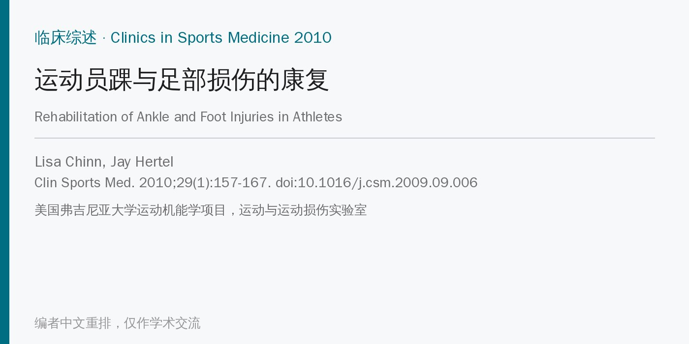
🔖原文信息（编者中文重排）
📚 文献信息
▪ Chinn L, Hertel J. Rehabilitation of Ankle and Foot Injuries in Athletes. Clin Sports Med. 2010;29(1):157-167. doi:10.1016/j.csm.2009.09.006
▪ 中文题目：运动员踝与足部损伤的康复
▪ 作者来自美国弗吉尼亚大学运动机能学项目运动与运动损伤实验室，通讯作者 Jay Hertel
▪ 文章类型：临床综述（叙述性，无系统检索），美国国家补充与替代医学中心资助
• 踝和足是运动员急性和慢性损伤最常见的部位之一，虽然很少危及生命，但会直接限制跑、跳、踢和变向
• 处理踝足损伤，除了损伤类型、严重程度、愈合时间和运动水平，还要考虑足型、生物力学、比赛用鞋，以及支具和贴扎
• 足是下肢动力链的“底座”，康复没做好，踝足损伤可能引发链条上方其他部位的继发损伤
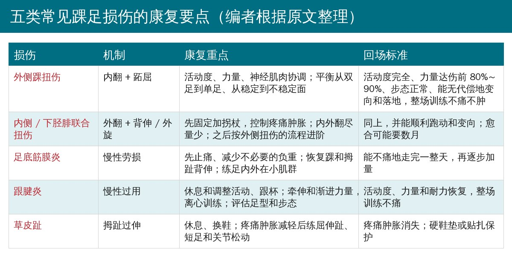
🔖编者根据原文整理
• 步态分为支撑相（足跟着地到足尖离地）和摆动相；评估步态、识别代偿，是决定是否需要专人指导康复的关键
• 足跟着地时距下关节处于旋后、胫骨外旋；承重后距下关节旋前、胫骨内旋，中跗关节“解锁”，足像减震器一样吸收冲击、适应地面，把负荷分散到更多结构上
• 重心越过支撑面时旋前达到最大，随后足再旋后、中跗关节“锁住”，足变成坚硬的杠杆，把力量传到地面完成蹬离
• 旋前本身是正常的，问题在于时机和幅度
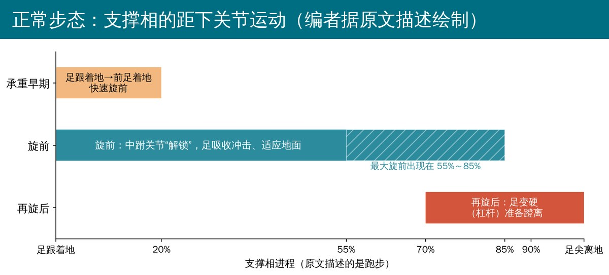
🔖编者据原文描述绘制
• 最常见的机制是后足相对胫骨过度内翻加跖屈，伤及距腓前韧带、距腓后韧带和跟腓韧带
• 1 度：韧带被拉长，几乎不松弛，疼痛肿胀轻，处理疼痛肿胀后常可马上开始康复，停训一般少于 1 周
• 2 度：部分纤维撕裂，中度松弛，疼痛肿胀中到重，常需固定数天
• 3 度：韧带完全断裂，关节明显松弛，可能数周不能负重
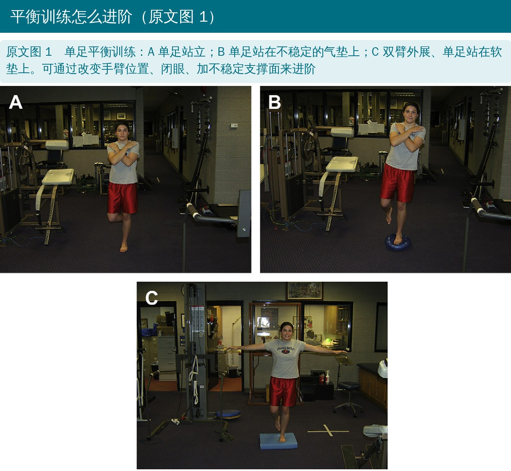
🔖原文图 1（照片内只有分图字母，图注由编者翻译）
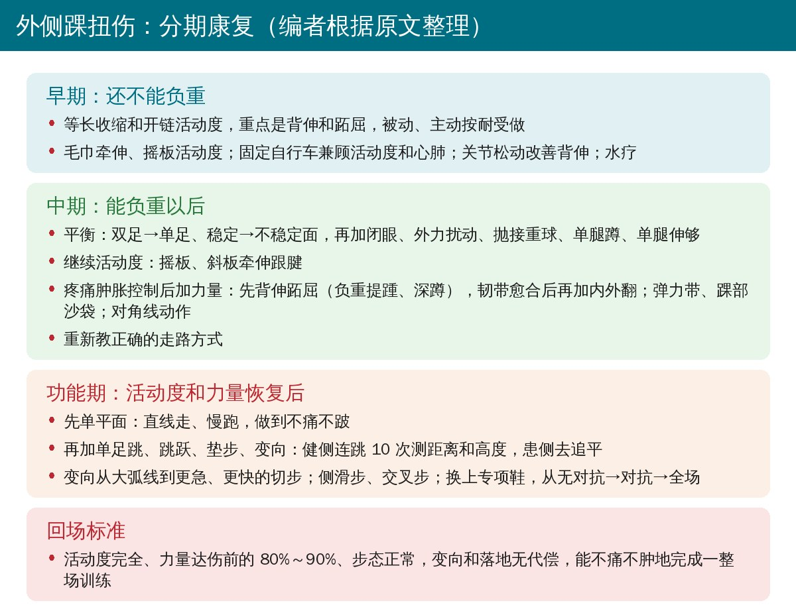
🔖编者根据原文整理
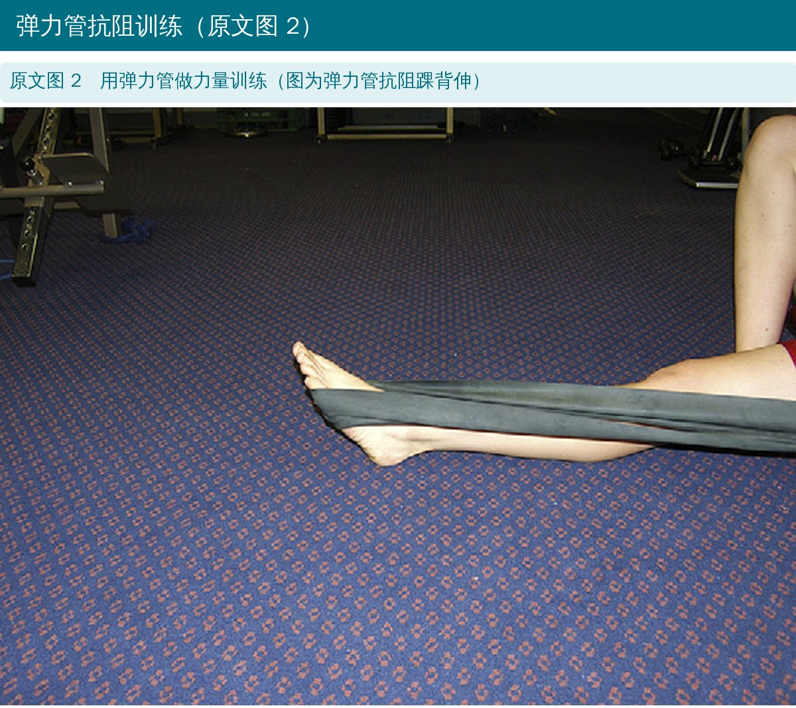
🔖原文图 2（照片内无文字，图注由编者翻译）
• 家庭训练：刷牙时用患侧单足站，进阶到闭眼刷牙
• 由康复治疗师做距小腿关节和胫腓关节松动，改善背伸
• 穿鞋和光脚交替训练，改变足底皮肤感觉输入
• 在 10～20 码（约 9～18 m）的场地来回踮脚走，再分别用脚尖内扣、外八和足跟走
• 让患者用患侧连续单足跳 10 次、尽量跳高，同时观察面部表情：能做完且不皱眉，就可以开始功能性康复
• 踝扭伤最大的危险因素是既往扭伤；初次扭伤者约 30% 会发展成慢性踝关节不稳
• 患者、教练和家长常认为踝扭伤不严重、很快能上场，很多人根本不就医；要让各方明白残留症状和反复扭伤很常见，必须等韧带愈合、活动度、力量和平衡都恢复后再回场
• 康复过程中如果又肿了，说明练多了
• 贴扎和护踝都能降低再扭伤风险：护踝方便、性价比高，还能提供本体感觉刺激；贴扎可以按运动员、项目和不稳方向定制
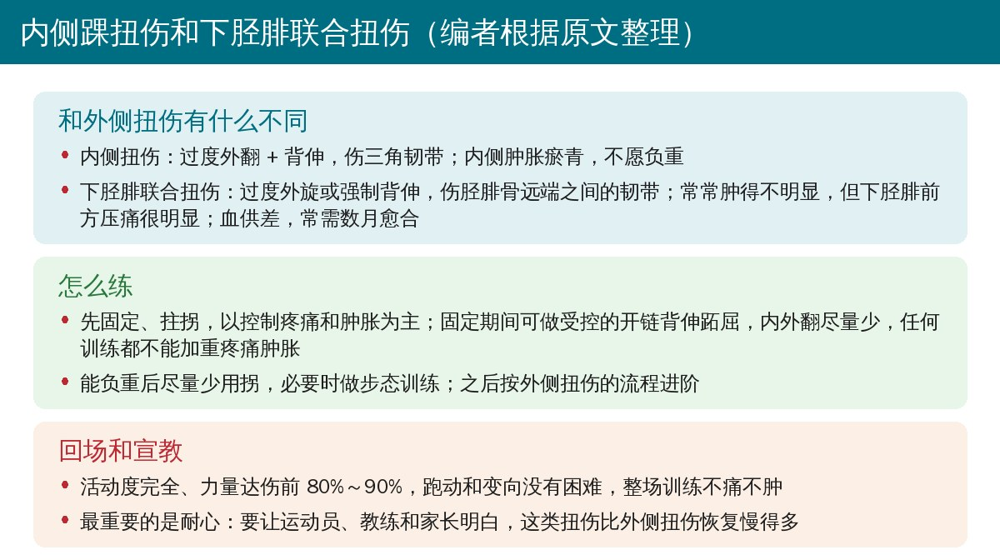
🔖编者根据原文整理
• 足底筋膜是从跟骨内侧延伸到跖趾关节的致密结缔组织，维持足的稳定、支撑纵弓；伸趾和足弓下沉时被拉紧
• 原文认为病因是筋膜起点附近的劳损，常与跑姿不良、鞋不合适有关
• 依从性好的话可以很快缓解，治疗不当则可能拖上数月甚至数年
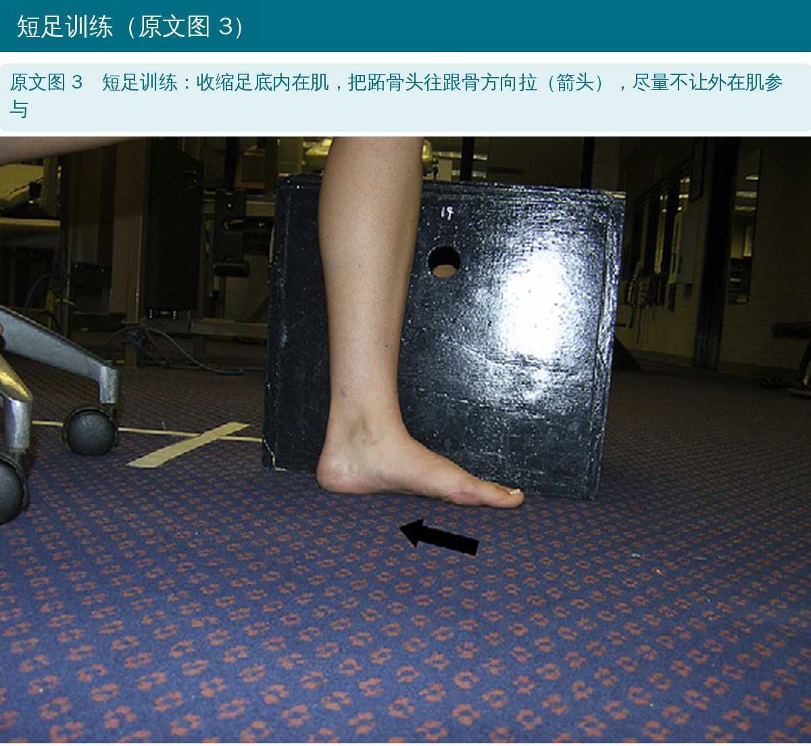
🔖原文图 3（照片内只有箭头，图注由编者翻译）
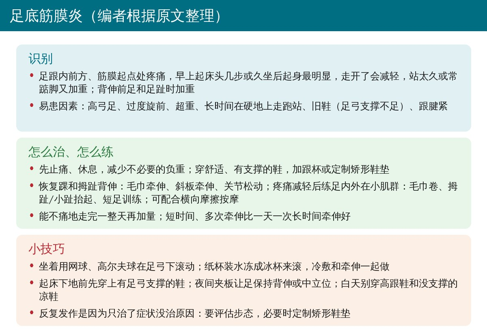
🔖编者根据原文整理
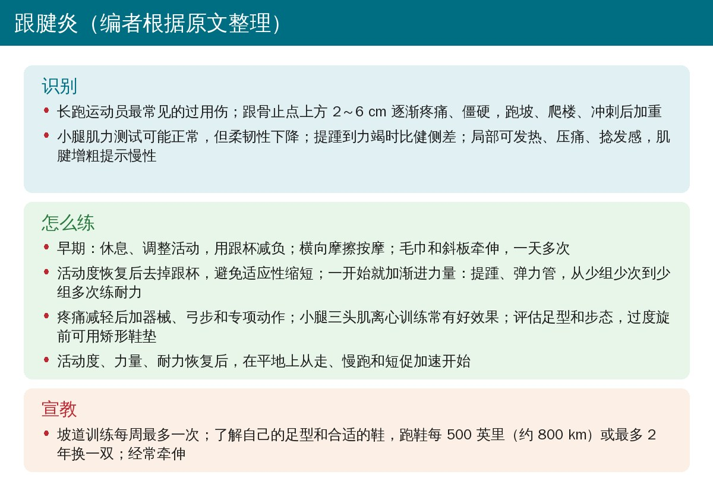
🔖编者根据原文整理
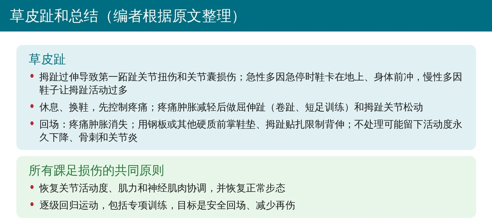
🔖编者根据原文整理
• 几乎所有运动员下肢损伤都能从包含治疗性训练的康复方案中获益
• 重点是恢复关节活动度、肌力、神经肌肉协调和正常步态
• 逐级回归运动、加入专项训练，目标是安全回场、尽量减少再伤
• 这是 2010 年的叙述性综述：没有系统检索，多数建议（如分期进阶、回场标准、各种小技巧）来自临床经验，只有少数几处引用研究；适合当作框架，不宜当作证据
• “跟腱炎”的说法已经过时：原文把它定义为炎症性疾病，而关键词里用的却是“跟腱变性（tendinosis）”；现在一般称为跟腱病，认为以肌腱退行性改变为主，治疗也更强调渐进负荷而不是长时间休息（编者观点）
• 足底筋膜炎“先休息、减少负重”：原文以休息为起点，近年更多主张在负荷管理下尽早加入牵伸和力量训练（编者观点）
• “力量达伤前 80%～90%”很难操作：多数运动员没有伤前力量数据，临床通常改用健侧对比，原文没有给出具体测法
• 部分说法缺少依据：如腰椎前凸导致足底筋膜炎、跑鞋每 500 英里或 2 年更换、坡道训练每周最多一次，原文都没有引用研究
• 方向仍然可信：既往扭伤是再扭伤的首要危险因素、约 30% 发展为慢性踝关节不稳、贴扎和护踝能降低再扭伤，这几条原文都有引用
• 步态时间段重叠：一处说距下关节旋前一直维持到支撑相的 55%～85%，下一句又说 70%～90% 开始再旋后，两段区间互相重叠，原文没解释
• 对角线动作“孤立距小腿关节”：原文说跖屈 + 内翻、背伸 + 外翻的对角线动作可以孤立距小腿关节的运动，但内外翻主要发生在距下关节，组合动作恰恰不是孤立运动
• 名称前后不一：关键词写“Achilles Tendinosis（跟腱变性）”，正文通篇写“Achilles tendonitis（跟腱炎）”并定义为炎症
• 笔误较多：rigid level（应为 lever，杠杆）、reafoot（rearfoot）、planter / planar（plantar）、Tuft toe（Turf toe）、Towel crutches（应为 towel crunches，毛巾卷）、osteoarthritis arthritis；“roll on a ball underneath the medial longitudinal”漏了 arch
• 版权页年份：页脚为 2010 年第 29 卷，ISSN 行却写“0278-5919/09”
• 踝扭伤别轻视：分期进阶、平衡训练从易到难，回场前用单足连跳、跳远对比和整场训练检验
• 高位扭伤要给足时间：下胫腓联合扭伤肿得不明显却可能要数月恢复，提前和运动员、教练讲清预期
• 足底筋膜和跟腱：抓住背伸活动度、足部小肌群和小腿力量，同时评估鞋、足型和步态；具体负荷方案可参考更新的指南
• 草皮趾：用硬质前掌鞋垫或贴扎限制拇趾背伸，比硬扛着练更重要
欢迎关注悦美力公众号，获取更多物理治疗的专业知识！
📄参考文献：
Chinn L, Hertel J. Rehabilitation of Ankle and Foot Injuries in Athletes. Clin Sports Med. 2010;29(1):157-167. doi:10.1016/j.csm.2009.09.006（PubMed Central 作者稿 PMC2786815）
本文为中文解读，仅作学术交流：照片引自原文图 1～图 3（图中无英文，图注由编者翻译），损伤一览、步态示意和各损伤康复卡为编者根据原文整理。原文版权归 Elsevier 所有。